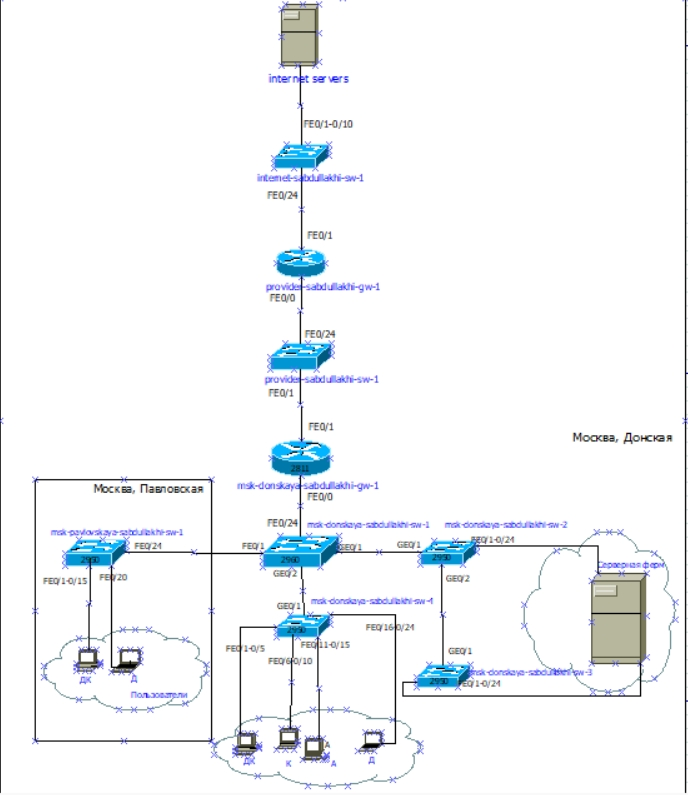
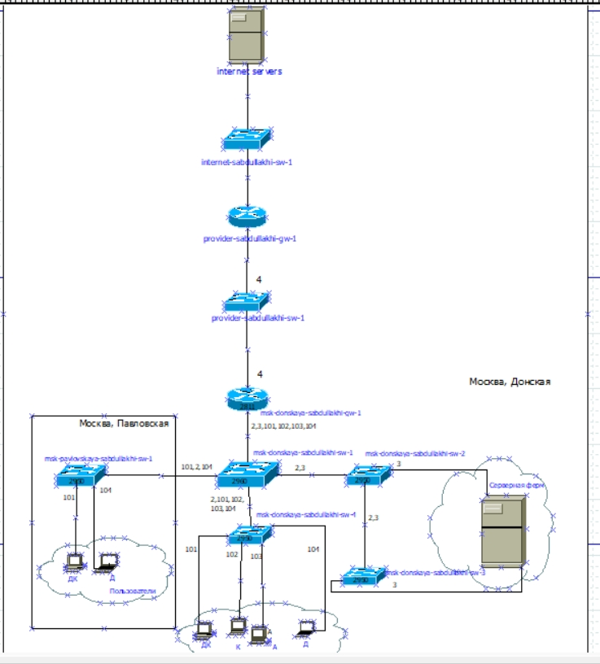
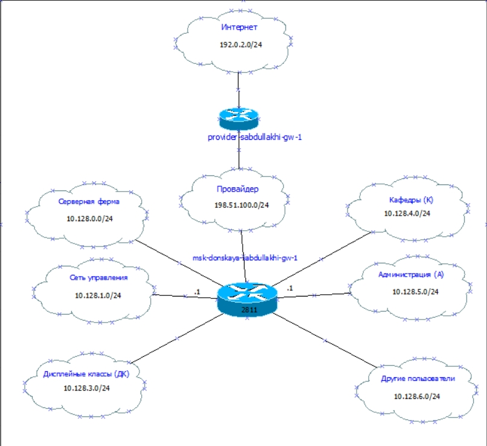
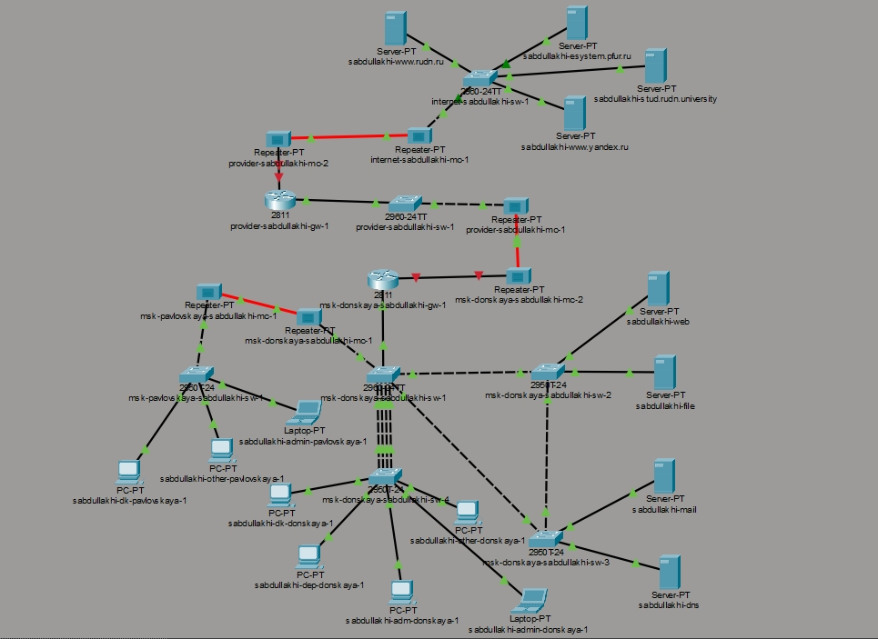
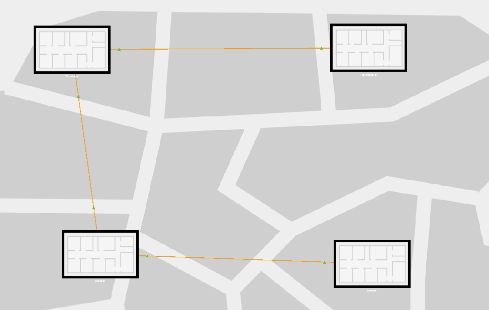
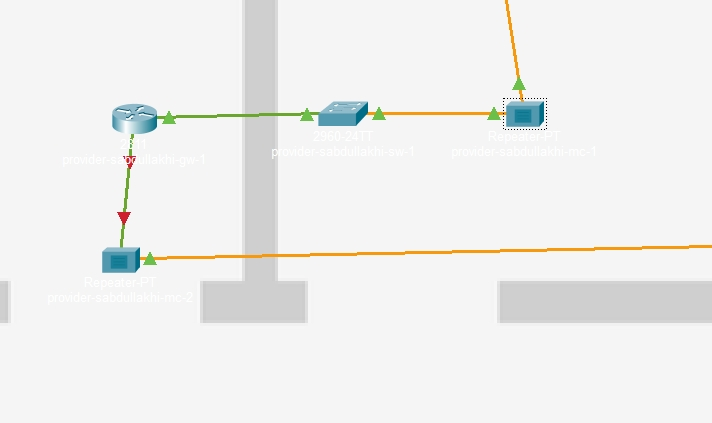
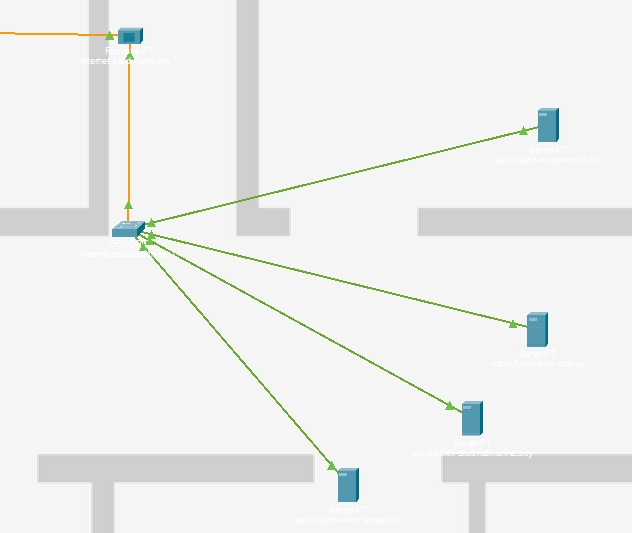
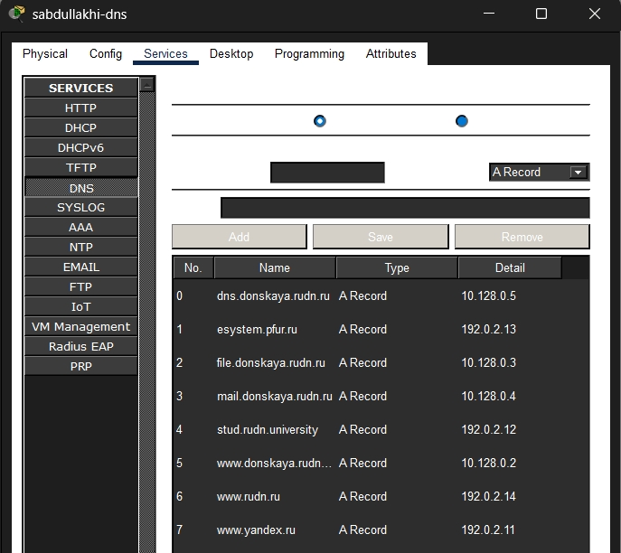
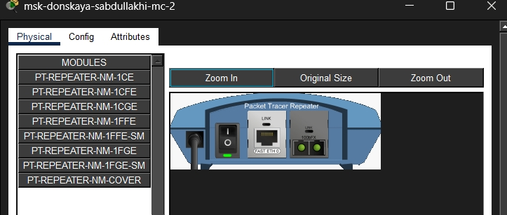

Провести подготовительные мероприятия по подключению локальной сети организации к Интернету, включая планирование адресного пространства, настройку VLAN, маршрутизацию и преобразование сетевых адресов (NAT). В ходе работы необходимо смоделировать сеть провайдера и модельную сеть Интернета, выполнить базовую настройку устройств и проверить взаимодействие между сегментами сети.









В ходе лабораторной работы была спроектирована и настроена сеть, включающая локальную инфраструктуру организации, сеть провайдера и модельный Интернет в Cisco Packet Tracer. Выполнено планирование VLAN и IP-адресации, на DNS-сервере настроены записи для внутренних и внешних ресурсов. На медиаконвертерах заменены модули на PT-REPEATER-NM-1FFE и PT-REPEATER-NM-1CFE для согласования витой пары и оптоволокна. Создана основа для последующей настройки NAT на пограничном маршрутизаторе, что обеспечит выход устройств внутренней сети в Интернет с использованием публичных адресов. Все цели работы достигнуты.